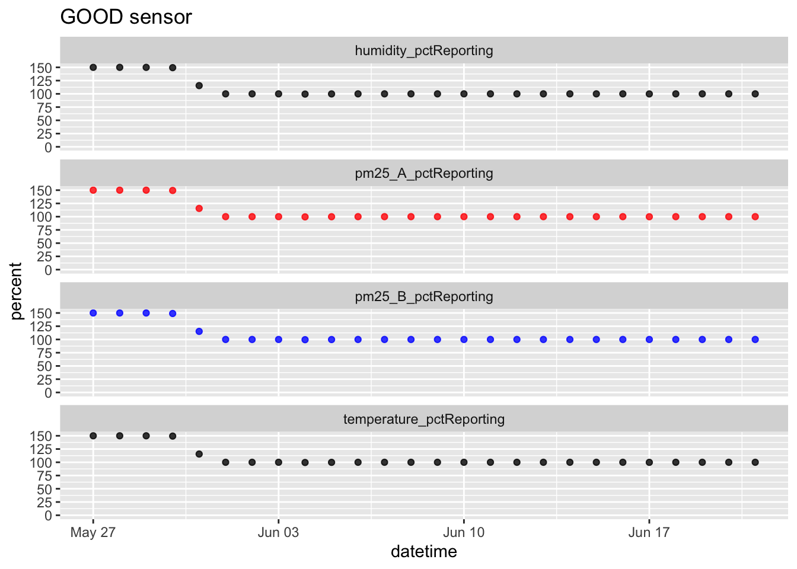
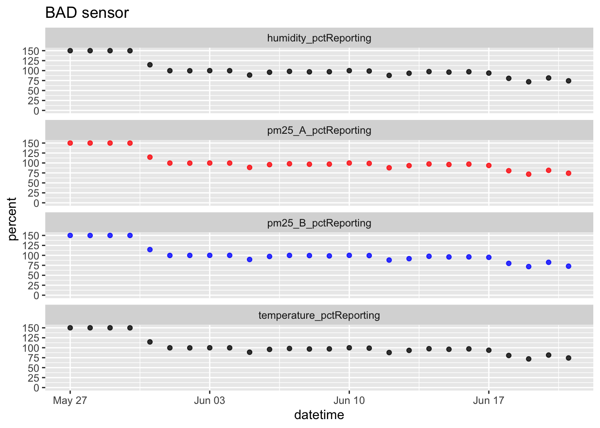
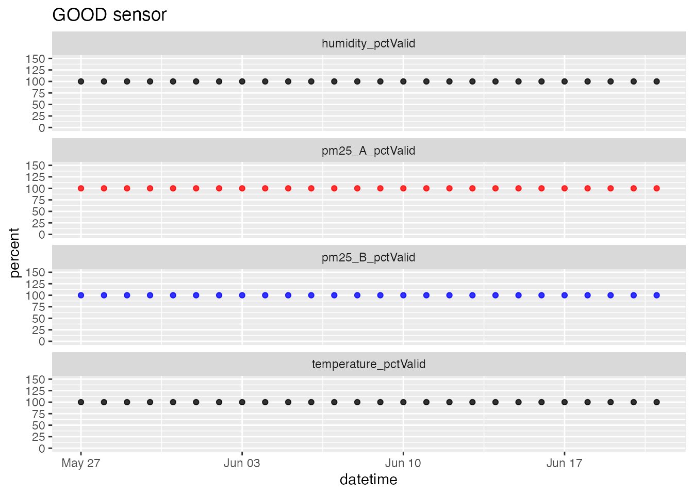
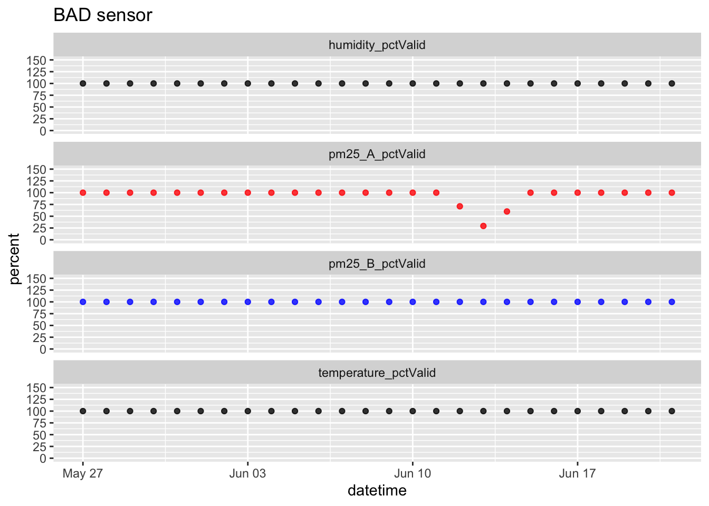
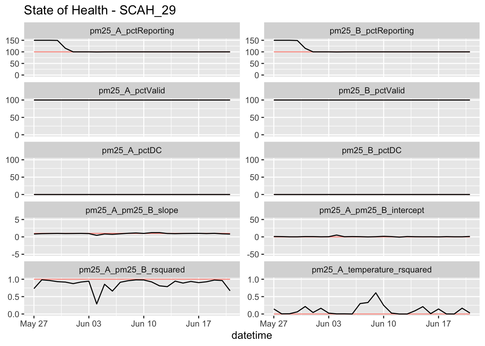
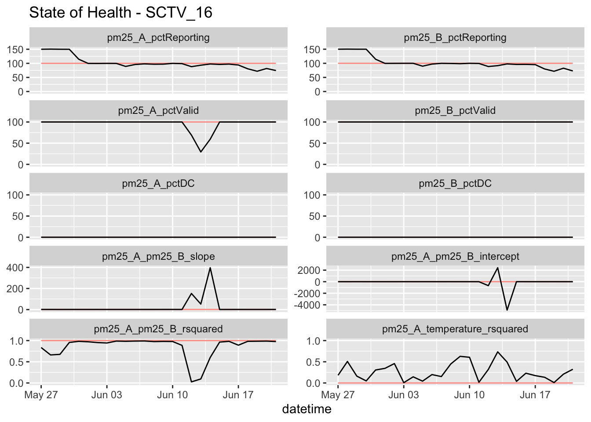
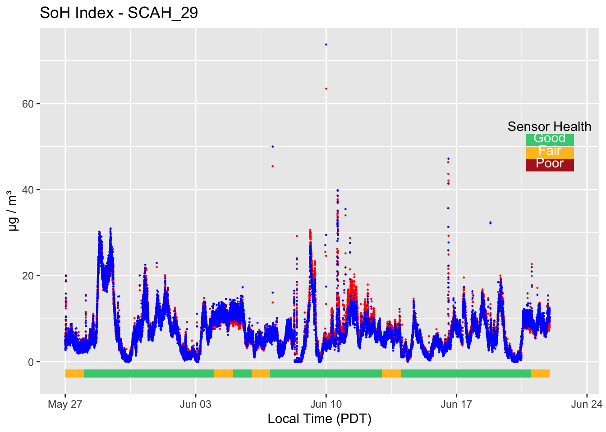
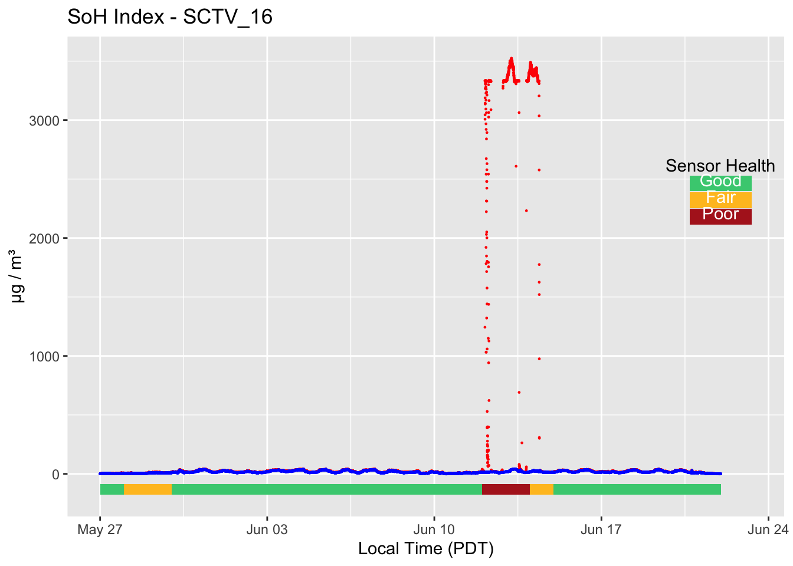

SoH Functions
Mazama Science
2019-11-13
Source:vignettes/articles/SoH_functions.Rmd
SoH_functions.Rmd“Good” and “Bad” data
An important part of data analysis is deciding whether or not the data are accurate. As part of the AirSensor package there are several functions that provide metrics to help you assess the “State of Health” (SoH) of the data collected by a PurpleAir sensor. This vignette demonstrates an example workflow for using pat data and the SoH functions.
Provided below are two examples of pat data. The first is well behaved data from a properly functioning sensor that here forward will be referred to as “good”. The second example shows data that were clearly collected by a malfunctioning sensor. We will call that “bad”. Notice the jump in channel A pm25 readings between June 10 and June 17 in the bad data, we will explore this section of data throughout the rest of this example.
good_id <- pas_getDeviceDeploymentIDs(pas, pattern = "SCAH_29")
good_pat <- pat_createNew(id = good_id,
label = "SCAH_29",
pas,
startdate = "2019-05-27",
enddate = "2019-06-22",
timezone = "America/Los_Angeles")
pat_multiplot(good_pat, sampleSize = 1e6)
bad_id <- pas_getDeviceDeploymentIDs(pas, pattern = "SCTV_16")
bad_pat <- pat_createNew(id = bad_id,
label = "SCTV_16",
pas,
startdate = "2019-05-27",
enddate = "2019-06-22",
timezone = "America/Los_Angeles")
pat_multiplot(bad_pat, sampleSize = 1e6)
Percent reporting
Within the AirSensor package there are several functions that can help to determine which of these datasets is more reliable without actually looking at a plot of the pm25 channels.
The first of these functions, PurpleAirSoH_dailyPctReporting will provide a daily percentage of each day that the sensor was turned on and reporting data.
good_PctReport <- PurpleAirSoH_dailyPctReporting(good_pat)
bad_PctReport <- PurpleAirSoH_dailyPctReporting(bad_pat)Ideally, the percent reporting hovers near 100%, the sensor should be reporting all the time. Notice however, that for both sensors the first few points hang out around 150%, this is due to a difference in sampling frequencies before and after a firmware update that became available to the sensors in June 2019. Prior to June, all sensors were samplling at a higher rate, hence percentages greater than %100. Before firmware updates were installed, a perfectly performing sensor should report at %150. (Sampling intervals were 80 sec before the update and 120 sec after the update.)
Both sensors start out with near full reporting percentages, and after the firmware update the good data are still nearly perfect, hovering at 100% without any dropouts, but the bad sensor starts to deteriorate between June 10 and June 17.
# gg setup
good_tidy <- good_PctReport %>%
gather(key ="variable", value = "value", -datetime)
bad_tidy <- bad_PctReport %>%
gather(key ="variable", value = "value", -datetime)
# ggplots using tidy data
gg_good <- ggplot(good_tidy) +
geom_point(aes(x = datetime, y = value, color = variable), alpha = 0.8)+
facet_wrap(vars(variable), scales = "free_y", nrow = 4) +
scale_color_manual(values = c("black","red", "blue", "black")) +
ylab("percent") +
scale_y_continuous(breaks = c(0, 25, 50, 75, 100, 125, 150),
limits = c(0, 150)) +
theme(legend.position = "none") +
ggtitle("GOOD sensor")
print(gg_good)
gg_bad <- ggplot(bad_tidy) +
geom_point(aes(x = datetime, y = value, color = variable), alpha = 0.8)+
facet_wrap(vars(variable), scales = "free_y", nrow = 4) +
scale_color_manual(values = c("black","red", "blue", "black")) +
ylab("percent") +
scale_y_continuous(breaks = c(0, 25, 50, 75, 100, 125, 150),
limits = c(0, 150)) +
theme(legend.position = "none") +
ggtitle("BAD sensor")
print(gg_bad)
Percent valid
The next question to ask is, of the recorded data, how much of it is valid, i.e., not NA or out of spec for the sensor? This is a question that can be answered by is PurpleAirSoH_dailyPctValid.
good_PctValid <- PurpleAirSoH_dailyPctValid(good_pat)
bad_PctValid <- PurpleAirSoH_dailyPctValid(bad_pat)Here, the good data are 100% valid and almost all the bad data are valid except for the pm25_A readings on a few days between June 10 - 17. This is exactly what we would have suspected based on the channel A pm25 trace on the initial raw data plots
# gg setup
good_tidy <- good_PctValid %>%
gather(key ="variable", value = "value", -datetime)
bad_tidy <- bad_PctValid %>%
gather(key ="variable", value = "value", -datetime)
# ggplots using tidy data
gg_good <- ggplot(good_tidy) +
geom_point(aes(x = datetime, y = value, color = variable), alpha = 0.8)+
facet_wrap(vars(variable), scales = "free_y", nrow = 4) +
scale_color_manual(values = c("black","red", "blue", "black")) +
ylab("percent") +
scale_y_continuous(breaks = c(0, 25, 50, 75, 100, 125, 150),
limits = c(0, 150)) +
theme(legend.position = "none") +
ggtitle("GOOD sensor")
print(gg_good)
gg_bad <- ggplot(bad_tidy) +
geom_point(aes(x = datetime, y = value, color = variable), alpha = 0.8)+
facet_wrap(vars(variable), scales = "free_y", nrow = 4) +
scale_color_manual(values = c("black","red", "blue", "black")) +
ylab("percent") +
scale_y_continuous(breaks = c(0, 25, 50, 75, 100, 125, 150),
limits = c(0, 150)) +
theme(legend.position = "none") +
ggtitle("BAD sensor")
print(gg_bad)
Daily SoH plots
There are a few more individual SoH functions in the AirSensor package including a function that calculates the percent of time a sensor reports a DC signal and funtions that calculate linear fits between different variables. But, rather than going through each one, there is also a function that calculates all the available SoH metrics for a given pat and plots the most useful ones.
On each plot there is a salmon colored line located at the expected value for each metric. For example, ideally, the percent reporting values are expected to be 100% and the percent DC values are expected to be 0. This helps at a quick glance, to identify a deviating signal or “bad” data.
In our example, the good data have almost perfectly flat lines in all metrics with the exception of some variability in the bottom three plots. Alternatively, the bad data show variability on all nearly all the plots between June 10 and June 17.


The pat_dailySoHPlot can be a useful way to quickly assess whether the data from a sensor should be trusted. Questions that a data analyst would ask themselves, (was the sensor powered on and reporting data, are the reported data valid or are they all out of spec, are the pm25_A and humidity channels well correlated?) are all questions that can be quickly answered quickly and objectively with the SoH functions.
Daily SoHIndex
An overall health index for a sensor can be created as a multi-metric index using individual SoH metrics. An overall SoH index will vary from 0 sensors that generate no useful data to 1 for sensors that appear to be working properly. By setting breaks, this index can be binned into integer values 1, 2 and 3 respectively representing “poor”“,”fair"" and “good”" sensor health.
The pat_dailySoHIndex_00() function is a simple multi-metric index based on pm25_A_pm25_B_rsquared. The daily evolution of the quality of sensor data can be reviewed visually as in the following example:


This package contains many additional functions for working with PurpleAir data and users are encouraged to review the reference documentation.
Happy Exploring!
Mazama Science